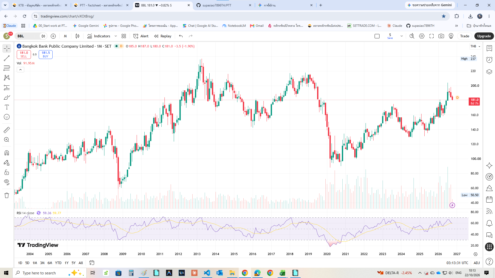
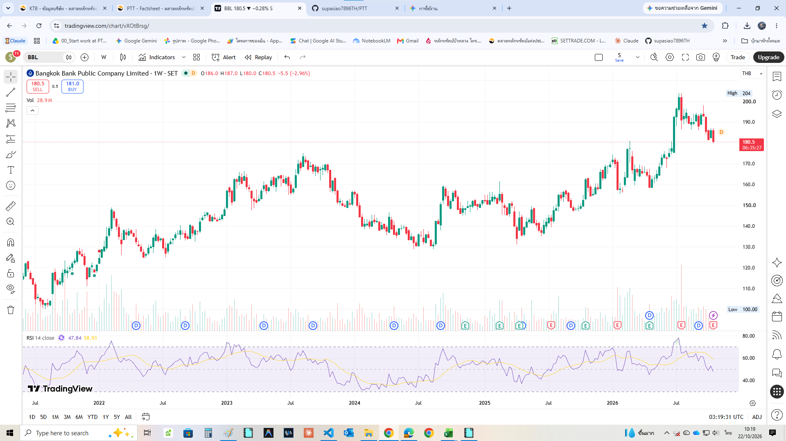
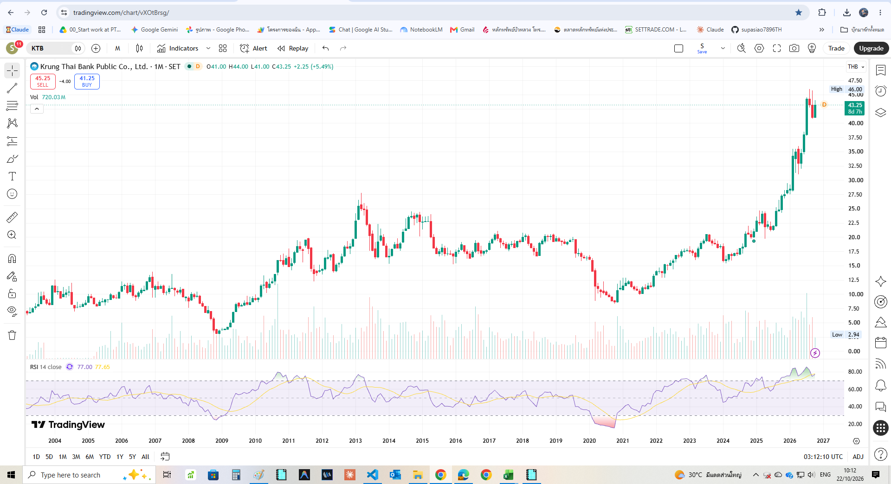
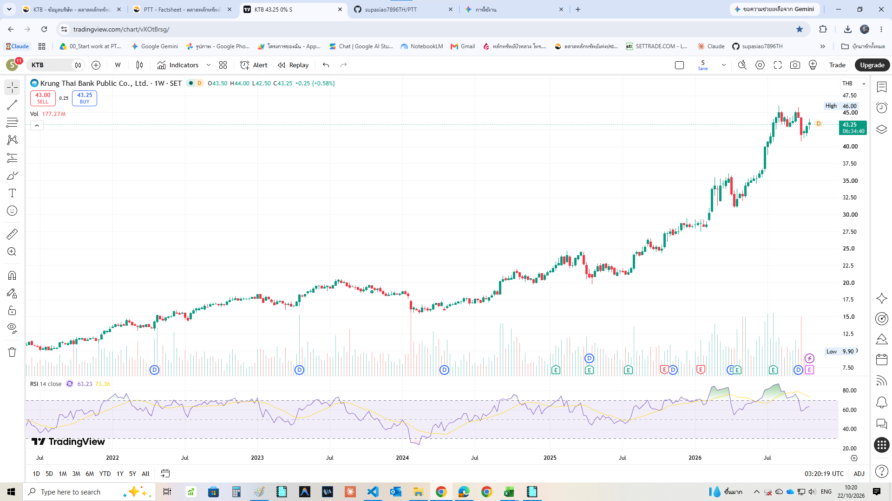

อ้างอิงงบการเงินปี 2568 (แบบ 56-1 One Report) และกราฟเทคนิครายเดือน (TF 1M) ณ วันที่ 22 ตุลาคม 2569
| ตัวชี้วัดสำคัญ (งบปี 2568 + ราคาตลาด 22/10/2026) | 🏦 BBL (181.00 บาท) | 🦅 KTB (43.25 บาท) | 📌 บทสรุปเชิงกลยุทธ์สำหรับพอร์ตพี่ A |
|---|---|---|---|
| VI Scorecard รวมสุทธิ (/30) | 27 / 30 (Strong Buy) | 26 / 30 (Watch / รอย่อ) | BBL ชนะด้วยคะแนนหมวด Valuation (4/4 vs 0/4) |
| กำไรสุทธิปี 2568 (Net Profit) | 46,007 ล้านบาท (+1.8% YoY) | 48,229 ล้านบาท (+4.5% YoY) | KTB กำไรสุทธิแซง BBL ได้จาก Cost-to-Income ที่ต่ำเพียง 40.3% |
| EPS และ BVPS ปี 2568 | EPS 24.10฿ · BVPS 300.67฿ | EPS 3.45฿ · BVPS 33.20฿ | BBL มีฐานสินทรัพย์สุทธิต่อหุ้นแข็งแกร่งมาก |
| P/E และ P/BV ณ ราคาปัจจุบัน | P/E 7.51x · P/BV 0.60x ✅ | P/E 12.54x · P/BV 1.30x ⚠️ | BBL ซื้อได้ในราคาลด 40% จาก Book Value ส่วน KTB แพงกว่า Book 30% |
| เงินปันผลปี 2568 (DPS) & Payout | 10.00 บาท (Payout 41.5%) | ปกติ 2.070฿ / รวมพิเศษ 2.670฿ (Payout 60% / 77.4%) | BBL จ่ายจาก Payout แค่ 41.5% มีรูมขึ้นปันผลต่อได้อีกมาก |
| Gross / Net Dividend Yield (หลังภาษี 10%) | 5.52% / 4.97% ✅ | ปกติ 4.79% / 4.31% (รวมพิเศษ 6.17% / 5.56%) | ถ้านับปันผลปกติที่ยั่งยืน BBL ให้ Yield สูงกว่าชัดเจน |
| Conservative / Base Case Fair Value | 182.19฿ / 237.59฿ (MoS +23.82%) | 30.71฿ / 35.72฿ (Overvalued -21.1%) | BBL อยู่ในโซนคุ้มค่า ส่วน KTB ราคาวิ่งนำพื้นฐานไปล่วงหน้าแล้ว |
| สัญญาณเทคนิค (TF 1M) | Healthy Throwback (RSI = 59.36) | Parabolic Overbought (RSI = 77.00) | ทยอยสะสม BBL โซน 172–181฿ · รอ KTB ย่อลงโซน 33.00–35.50฿ |
| รายการสำคัญ (งบการเงินรวม) | 🏦 BBL ปี 2568 | 🏦 BBL ปี 2567 | 🦅 KTB ปี 2568 | 🦅 KTB ปี 2567 | วิเคราะห์เปรียบเทียบ |
|---|---|---|---|---|---|
| สินทรัพย์รวม (Total Assets) | 4,606,342 ล้าน฿ | 4,551,379 ล้าน฿ | 3,933,319 ล้าน฿ | 3,739,144 ล้าน฿ | BBL เป็นธนาคารที่มีขนาดสินทรัพย์ใหญ่ที่สุด (+17.1% เหนือ KTB) |
| เงินให้สินเชื่อรวม (Total Loans) | 2,608,286 ล้าน฿ (-3.2%) | 2,693,301 ล้าน฿ | 2,711,171 ล้าน฿ (+0.5%) | 2,698,818 ล้าน฿ | KTB เน้นสินเชื่อภาครัฐ/ข้าราชการ · BBL เน้นสินเชื่อ Corporate & ต่างประเทศ |
| รายได้ดอกเบี้ยสุทธิ (NII) & NIM | 123,630 ล้าน฿ (NIM 2.75%) | 133,900 ล้าน฿ (NIM 3.06%) | 105,781 ล้าน฿ (NIM 2.82%) | 119,116 ล้าน฿ (NIM 3.29%) | NII ลดลงตามดอกเบี้ยขาลง แต่ KTB รักษา NIM ได้ดีกว่าเล็กน้อย |
| รายได้ที่มิใช่ดอกเบี้ย (Non-NII) | 54,868 ล้าน฿ (+30.9%) | 41,923 ล้าน฿ | 54,847 ล้าน฿ (+29.7%) | 42,272 ล้าน฿ | เติบโตโดดเด่นระดับ +30% ทั้งคู่ ช่วยชดเชยดอกเบี้ยขาลงได้หมด |
| Cost-to-Income Ratio | 48.4% | 48.0% | 40.3% ✅ | 42.6% | KTB คุมต้นทุนเก่งที่สุดในกลุ่มธนาคารใหญ่ จาก Ecosystem แอปเป๋าตัง |
| สำรองหนี้สูญ (ECL) | 36,147 ล้าน฿ | 34,838 ล้าน฿ | 30,760 ล้าน฿ | 31,070 ล้าน฿ | BBL ยังคงตั้งสำรองเข้มงวดตามสไตล์อนุรักษนิยม |
| กำไรสุทธิ (Net Profit) | 46,007 ล้าน฿ (+1.8%) | 45,211 ล้าน฿ | 48,229 ล้าน฿ (+4.5%) | 46,165 ล้าน฿ | ทำกำไรสุทธิสูงสุดเป็นประวัติการณ์ต่อเนื่องทั้งคู่ |
| ROE / ROA | 8.07% / 1.00% | 8.33% / 1.00% | 10.67% / 1.26% ✅ | 10.74% / 1.25% | KTB ชนะด้านประสิทธิภาพการทำกำไรต่อส่วนของผู้ถือหุ้น (ROE > 10%) |
| NPL Ratio / Coverage Ratio | 3.00% / 324.1% ✅ | 2.70% / 334.3% | 2.90% / 203.6% | 2.99% / 188.6% | BBL มี Coverage Ratio 324.1% สูงที่สุดในระบบธนาคารไทย |
| Tier 1 / CAR (เงินกองทุนรวม) | 17.22% / 21.78% | 17.0% / 20.4% | 20.18% / 22.12% | 18.8% / 20.8% | เงินกองทุนแข็งแกร่งระดับ 21%–22% ทั้งคู่ |
| วิธีประเมินมูลค่า (vi-analysis §22.4) | สมมติฐานหลัก | 🏦 มูลค่าเหมาะสม BBL | 🦅 มูลค่าเหมาะสม KTB |
|---|---|---|---|
| 1. DCF / Sustainable Equity CF | Justified P/BV (BBL = 0.65x BV จาก ROE 8.1%; KTB = 0.93x BV จาก ROE 10.7%) | 195.00 บาท | 30.88 บาท |
| 2. P/E Relative Valuation | Target P/E = 7.5 เท่า (ค่าเฉลี่ยระยะยาวของกลุ่มธนาคารพาณิชย์ไทย) × EPS ปี 2568 | 180.75 บาท | 25.88 บาท |
| 3. Graham Number | √(22.5 × EPS × BVPS) | 403.78 บาท | 50.77 บาท |
| 4. DDM (Gordon Growth Model) | ใช้ปันผลปกติ (BBL = 10.00฿, KTB = 2.070฿), r = 8.5%, g = 2.5% | 170.83 บาท | 35.36 บาท (รวมพิเศษได้ 45.61฿) |
| 📌 Conservative Fair Value (เฉลี่ยวิธี 1, 2, 4) | ตัด Graham Number ออกเพื่อไม่ให้ Book Value ดึงค่าเฉลี่ยสูงเกินจริง | 182.19 บาท (MoS +0.65%) | 30.71 บาท (Overvalued -40.8%) |
| 📌 Base Case Fair Value (เฉลี่ยครบ 4 วิธี) | ค่าเฉลี่ยมาตรฐานทั้ง 4 วิธี | 237.59 บาท (MoS +23.82%) | 35.72 บาท (Overvalued -21.1%) |
3.50 → 4.50 → 7.00 → 8.50 → 10.00 บาท/หุ้น (เติบโตต่อเนื่องทุกปี และใช้ Payout เพียง 41.5% จึงยังมีรูมขึ้นปันผลสู่ระดับ 11–12 บาทได้ในอนาคต)0.418 → 0.682 → 0.868 → 1.545 → 2.670 บาท/หุ้น (แบ่งเป็นปันผลปกติ 2.070 บาท + ปันผลพิเศษ 0.600 บาท)

ภาพใหญ่รายเดือน: แกว่งตัวขึ้นในกรอบ Ascending Channel เพิ่งทะลุแนวต้าน 175฿ ขึ้นไปแตะ 204฿ แล้วกำลังย่อตัว (Healthy Throwback) 2 แท่งเดือนพร้อม Volume ที่หดตัวลง โดยที่ RSI รายเดือน (59.36) ยังไม่เข้าเขต Overbought

ภาพระยะกลางรายสัปดาห์: ย่อตัวจากยอด 204.0฿ ลงมาที่ 180.5฿ ดันให้ RSI รายสัปดาห์ลดลงมาที่ 47.84 (ในรอบขาขึ้นปี 2025–2026 ทุกครั้งที่ RSI 1W ลงแตะโซน 40–45 มักเป็นจุดเด้งกลับเสมอ) แนวรับ Neckline เดิมอยู่ที่ 172.0–180.5 บาท

ภาพใหญ่รายเดือน: พุ่งขึ้นแบบ Parabolic Run (ชันเกือบ 90 องศา) จาก 20฿ ขึ้นไปทำ All-Time High ที่ 46.00 บาท ดันให้ RSI รายเดือนพุ่งถึง 77.00 (Overbought รุนแรง) สอดคล้องกับ P/BV 1.30x ที่ตึงตัวมาก

ภาพระยะกลางรายสัปดาห์: เกิดรูปทรง Double Top ย่อยที่ 45.50–46.00 บาท และ RSI รายสัปดาห์ (63.23) หักหัวตัดเส้นค่าเฉลี่ย SMA (73.36) ลงแล้ว บ่งชี้ว่าโมเมนตัมระยะกลางเริ่มอ่อนแรง ควรรอรับที่ฐานพักตัวเดิมโซน 31.50–35.50 บาท
| หุ้นและกลยุทธ์หลัก | ไม้ที่ 1 (โซนเริ่มทยอยสะสม) | ไม้ที่ 2 (โซนสะสมหลัก VI) | ไม้ที่ 3 (โซนปลอดภัยสูง / Deep Value) |
|---|---|---|---|
| 🏦 BBL (181.00฿) เริ่มทยอยเข้าไม้แรกได้ |
172.00 – 181.00 บาท (25%–30% ของงบ) โซน Throwback ทดสอบแนวรับเดิม · เท่ากับ Conservative Fair Value (182.19฿) · Gross Yield 5.52%–5.81% |
155.00 – 165.00 บาท (40%–50% ของงบ) ฐานพักตัวกลาง Channel · P/BV ~0.53x · Gross Yield 6.06%–6.45% |
138.00 – 148.00 บาท (20%–30% ที่เหลือ) ขอบล่างขาขึ้นปี 2024–2025 · MoS > 20% เทียบ Conservative Value · Yield ~7.0% |
| 🦅 KTB (43.25฿) Wait & See (ห้ามไล่ราคา) |
33.00 – 35.50 บาท (30% ของงบ) รอให้ย่อลงมาหา Base Case Fair Value (35.72฿) และ 1.0x Book Value (33.20฿) · Yield ปกติ ~6.0% |
27.50 – 30.50 บาท (50% ของงบ) โซน Throwback ยอดเดิมปี 2013 (27.70฿) + Conservative Value (30.71฿) · Yield ปกติ 6.8%–7.5% |
23.50 – 26.00 บาท (20% ที่เหลือ) ฐานพักตัวก่อนรอบ Breakout ใหญ่ปี 2025 (MoS > 20% ทุกวิธี) |